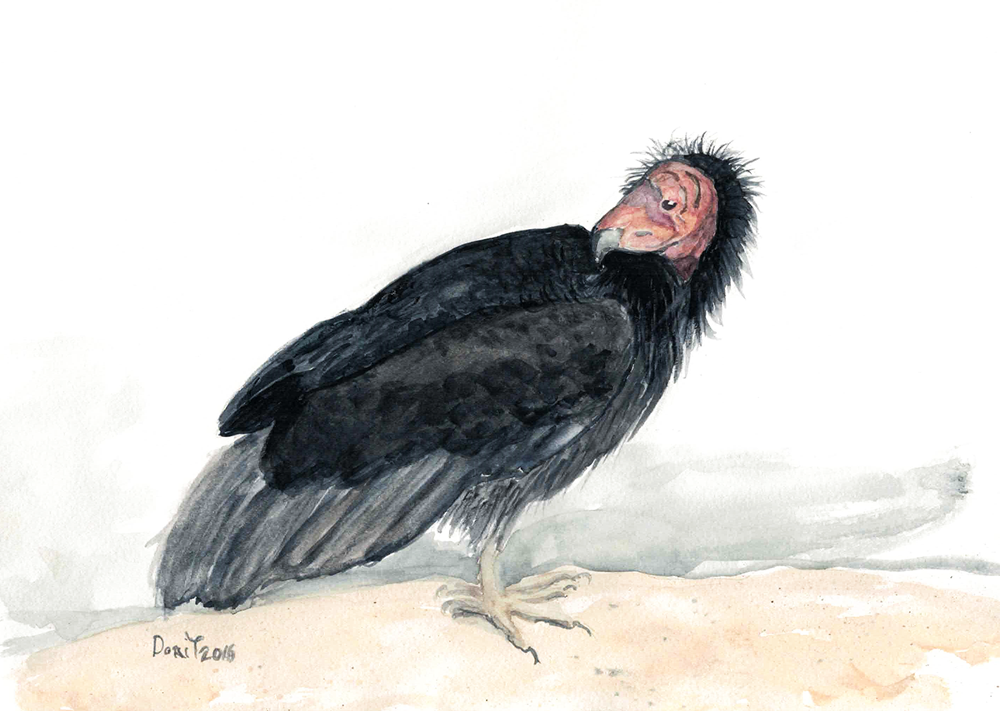
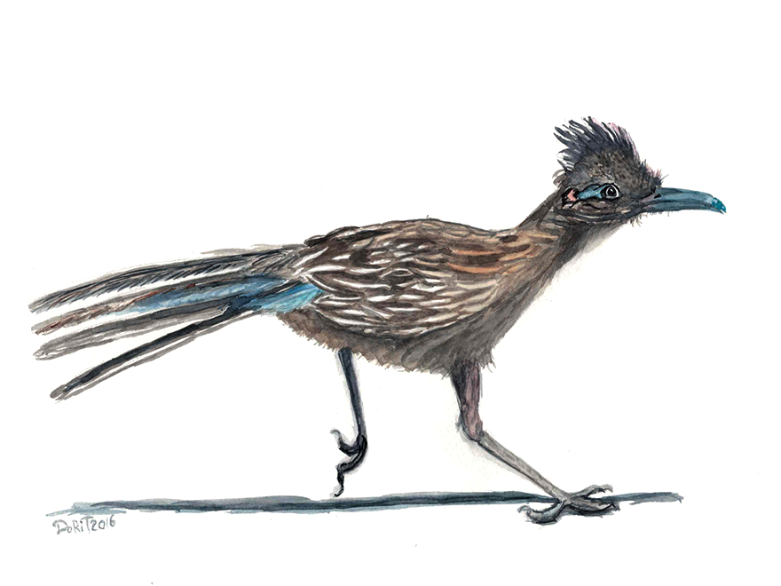
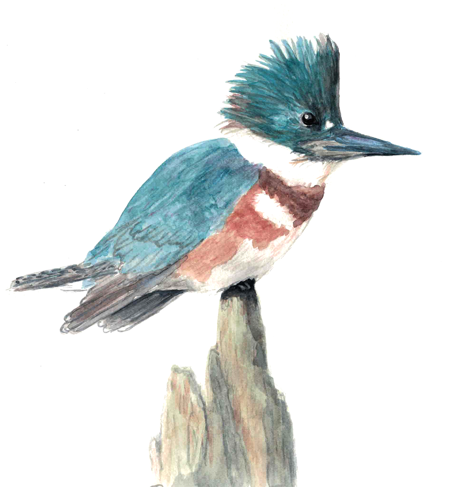

Here Are Some Nice Birds!

The California Condors are some of the nicest birds you'd meet. They clean
up, not only after themselves, but after others as well.
They also donate to charity on a regular basis. This particular
gentleman's favorite charity is Feeding America. He can also be seen
giving his seat to old people on the subway.
The Greater Roadrunners are indeed super great. Everybody knows
they run really fast. But did you know they use this skill to catch
thieves and robbers? If you get stuck in the desert with no water,
they will lead you to the nearest bodega. They are also known
to smile and tilt their hats whenever they see someone.


The Belted Kingfishers love to help people in any way they
can. Mostly, by assisting with carrying groceries, placing coins
in homeless people's paper cups, and pooping on cars that
play very loud music on the street.